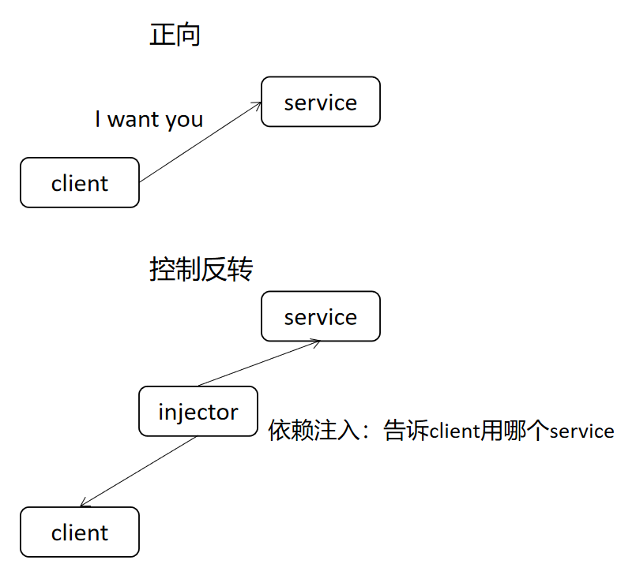

pytest精通fixture¶

精通fixture¶
fixture是pytest最核心的技术。
首先放一句“狠话”。
如果你不会fixture，那么你最好别说自己会pytest。
（只是为了烘托主题哈，手上的砖头可以放下了，手动滑稽）
fixture是什么¶
看看源码
def fixture(
callable_or_scope=None,
*args,
scope="function",
params=None,
autouse=False,
ids=None,
name=None
):
"""Decorator to mark a fixture factory function.
This decorator can be used, with or without parameters, to define a
fixture function.
The name of the fixture function can later be referenced to cause its
invocation ahead of running tests: test
modules or classes can use the ``pytest.mark.usefixtures(fixturename)``
marker.
Test functions can directly use fixture names as input
arguments in which case the fixture instance returned from the fixture
function will be injected.
Fixtures can provide their values to test functions using ``return`` or ``yield``
statements. When using ``yield`` the code block after the ``yield`` statement is executed
as teardown code regardless of the test outcome, and must yield exactly once.
:arg scope: the scope for which this fixture is shared, one of
``"function"`` (default), ``"class"``, ``"module"``,
``"package"`` or ``"session"`` (``"package"`` is considered **experimental**
at this time).
This parameter may also be a callable which receives ``(fixture_name, config)``
as parameters, and must return a ``str`` with one of the values mentioned above.
See :ref:`dynamic scope` in the docs for more information.
:arg params: an optional list of parameters which will cause multiple
invocations of the fixture function and all of the tests
using it.
The current parameter is available in ``request.param``.
:arg autouse: if True, the fixture func is activated for all tests that
can see it. If False (the default) then an explicit
reference is needed to activate the fixture.
:arg ids: list of string ids each corresponding to the params
so that they are part of the test id. If no ids are provided
they will be generated automatically from the params.
:arg name: the name of the fixture. This defaults to the name of the
decorated function. If a fixture is used in the same module in
which it is defined, the function name of the fixture will be
shadowed by the function arg that requests the fixture; one way
to resolve this is to name the decorated function
``fixture_<fixturename>`` and then use
``@pytest.fixture(name='<fixturename>')``.
"""
if params is not None:
params = list(params)
fixture_function, arguments = _parse_fixture_args(
callable_or_scope,
*args,
scope=scope,
params=params,
autouse=autouse,
ids=ids,
name=name,
)
scope = arguments.get("scope")
params = arguments.get("params")
autouse = arguments.get("autouse")
ids = arguments.get("ids")
name = arguments.get("name")
if fixture_function and params is None and autouse is False:
# direct decoration
return FixtureFunctionMarker(scope, params, autouse, name=name)(
fixture_function
)
return FixtureFunctionMarker(scope, params, autouse, ids=ids, name=name)
总结一下
【定义】
fixture是一个函数，在函数上添加注解
@pytest.fixture来定义定义在conftest.py中，无需import就可以调用
定义在其他文件中，import后也可以调用
定义在相同文件中，直接调用
【使用】
第一种使用方式是
@pytest.mark.usefixtures(fixturename)（如果修饰TestClass能对类中所有方法生效）第二种使用方式是作为函数参数
第三种使用方式是autouse（不需要显示调用，自动运行）
conftest.py¶
我们常常会把fixture定义到conftest.py文件中。
这是pytest固定的文件名，不能自定义。
必须放在package下，也就是目录中有__init__.py。
conftest.py中的fixture可以用在当前目录及其子目录，不需要import，pytest会自动找。
可以创建多个conftest.py文件，同名fixture查找时会优先用最近的。
依赖注入¶
fixture实现了依赖注入。依赖注入是控制反转（IoC， Inversion of Control）的一种技术形式。
简单理解一下什么是依赖注入和控制反转

实在是妙啊！我们可以在不修改当前函数代码逻辑的情况下，通过fixture来额外添加一些处理。
入门示例¶
## content of ./test_smtpsimple.py
import smtplib
import pytest
@pytest.fixture
def smtp_connection():
return smtplib.SMTP("smtp.gmail.com", 587, timeout=5)
def test_ehlo(smtp_connection):
response, msg = smtp_connection.ehlo()
assert response == 250
assert 0 # for demo purposes
执行后程序处理逻辑
pytest找到test_开头的函数，发现需要名字为smtp_connection的fixture，就去找
找到之后，调用smtp_connection()，return了SMTP的实例
调用test_ehlo() ，入参
smtp_connection等于fixture return的值
如果想看文件定义了哪些fixture，可以使用命令，_前缀的需要跟上-v
pytest --fixtures test_simplefactory.py
fixture scope & order¶
既然到处都可以定义fixture，那多了岂不就乱了？
pytest规定了fxture的运行范围和运行顺序。
fixture的范围通过参数scope来指定
@pytest.fixture(scope="module")
默认是function，可以选择function, class, module, package 或 session。
fixture都是在test第一次调用时创建，根据scope的不同有不同的运行和销毁方式
function 每个函数运行一次，函数结束时销毁
class 每个类运行一次，类结束时销毁
module 每个模块运行一次，模块结束时销毁
package 每个包运行一次，包结束时销毁
session 每个会话运行一次，会话结束时销毁
fixture的顺序优先按scope从大到小，session > package > module > class > function。
如果scope相同，就按test调用先后顺序，以及fixture之间的依赖关系。
autouse的fixture会优先于相同scope的其他fixture。
示例
import pytest
## fixtures documentation order example
order = []
@pytest.fixture(scope="session")
def s1():
order.append("s1")
@pytest.fixture(scope="module")
def m1():
order.append("m1")
@pytest.fixture
def f1(f3):
order.append("f1")
@pytest.fixture
def f3():
order.append("f3")
@pytest.fixture(autouse=True)
def a1():
order.append("a1")
@pytest.fixture
def f2():
order.append("f2")
def test_order(f1, m1, f2, s1):
assert order == ["s1", "m1", "a1", "f3", "f1", "f2"]
虽然test_order()是按f1, m1, f2, s1调用的，但是结果却不是按这个顺序
s1 scope为session
m1 scope为module
a1 autouse，默认function，后于session、module，先于function其他fixture
f3 被f1依赖
f1 test_order()参数列表第1个
f2 test_order()参数列表第3个
fixture嵌套¶
fixture装饰的是函数，那函数也有入参咯。
fixture装饰的函数入参，只能是其他fixture。
示例，f1依赖f3，如果不定义f3的话，执行会报错fixture ‘f3’ not found
@pytest.fixture
def f1(f3):
order.append("f1")
@pytest.fixture
def f3():
order.append("f3")
def test_order(f1):
pass
从test传值给fixture¶
借助request，可以把test中的值传递给fixture。
示例1，smtp_connection可以使用module中的smtpserver
## content of conftest.py
import smtplib
import pytest
@pytest.fixture(scope="module")
def smtp_connection(request):
server = getattr(request.module, "smtpserver", "smtp.gmail.com")
smtp_connection = smtplib.SMTP(server, 587, timeout=5)
yield smtp_connection
print("finalizing {} ({})".format(smtp_connection, server))
smtp_connection.close()
## content of test_anothersmtp.py
smtpserver = "mail.python.org" # will be read by smtp fixture
def test_showhelo(smtp_connection):
assert 0, smtp_connection.helo()
示例2，结合request+mark，把fixt_data从test_fixt传值给了fixt
import pytest
@pytest.fixture
def fixt(request):
marker = request.node.get_closest_marker("fixt_data")
if marker is None:
# Handle missing marker in some way...
data = None
else:
data = marker.args[0]
# Do something with the data
return data
@pytest.mark.fixt_data(42)
def test_fixt(fixt):
assert fixt == 42
fixture setup / teardown¶
其他测试框架unittest/testng，都定义了setup和teardown函数/方法，用来测试前初始化和测试后清理。
pytest也有，不过是兼容unittest等弄的，不推荐！
from loguru import logger
def setup():
logger.info("setup")
def teardown():
logger.info("teardown")
def test():
pass
建议使用fixture。
setup，fixture可以定义autouse来实现初始化。
@pytest.fixture(autouse=True)
autouse的fixture不需要调用，会自己运行，和test放到相同scope，就能实现setup的效果。
autouse使用说明
autouse遵循scope的规则，scope=“session”整个会话只会运行1次，其他同理
autouse定义在module中，module中的所有function都会用它（如果scope=“module”，只运行1次，如果scope=“function”，会运行多次）
autouse定义在conftest.py，conftest覆盖的test都会用它
autouse定义在plugin中，安装plugin的test都会用它
在使用autouse时需要同时注意scope和定义位置
示例，transact默认scope是function，会在每个test函数执行前自动运行
## content of test_db_transact.py
import pytest
class DB:
def __init__(self):
self.intransaction = []
def begin(self, name):
self.intransaction.append(name)
def rollback(self):
self.intransaction.pop()
@pytest.fixture(scope="module")
def db():
return DB()
class TestClass:
@pytest.fixture(autouse=True)
def transact(self, request, db):
db.begin(request.function.__name__)
yield
db.rollback()
def test_method1(self, db):
assert db.intransaction == ["test_method1"]
def test_method2(self, db):
assert db.intransaction == ["test_method2"]
这个例子不用autouse，用conftest.py也能实现
## content of conftest.py
@pytest.fixture
def transact(request, db):
db.begin()
yield
db.rollback()
@pytest.mark.usefixtures("transact")
class TestClass:
def test_method1(self):
...
teardown，可以在fixture中使用yield关键字来实现清理。
示例，scope为module，在module结束时，会执行yield后面的print()和smtp_connection.close()
## content of conftest.py
import smtplib
import pytest
@pytest.fixture(scope="module")
def smtp_connection():
smtp_connection = smtplib.SMTP("smtp.gmail.com", 587, timeout=5)
yield smtp_connection # provide the fixture value
print("teardown smtp")
smtp_connection.close()
可以使用with关键字进一步简化，with会自动清理上下文，执行smtp_connection.close()
## content of test_yield2.py
import smtplib
import pytest
@pytest.fixture(scope="module")
def smtp_connection():
with smtplib.SMTP("smtp.gmail.com", 587, timeout=5) as smtp_connection:
yield smtp_connection # provide the fixture value
fixture参数化¶
后续会专门讲“pytest参数化”，这里就先跳过，请各位见谅啦。
因为我觉得想用pytest做参数化，一定是先到参数化的文章里面找，而不是到fixture。
把这部分放到参数化，更便于以后检索。
简要回顾¶
本文开头通过源码介绍了fixture是什么，并简单总结定义和用法。然后对依赖注入进行了解释，以更好理解fixture技术的原理。入门示例给出了官网的例子，以此展开讲了范围、顺序、嵌套、传值，以及初始化和清理的知识。
如果遇到问题，欢迎沟通讨论。